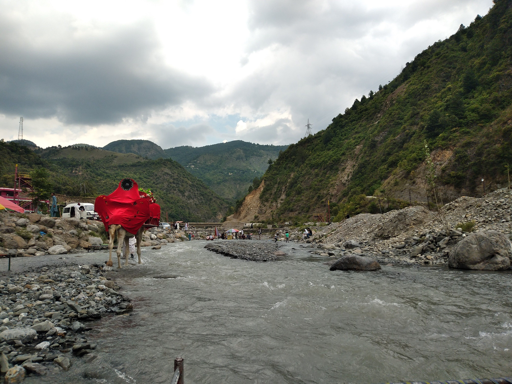
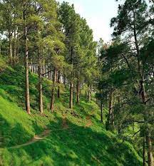
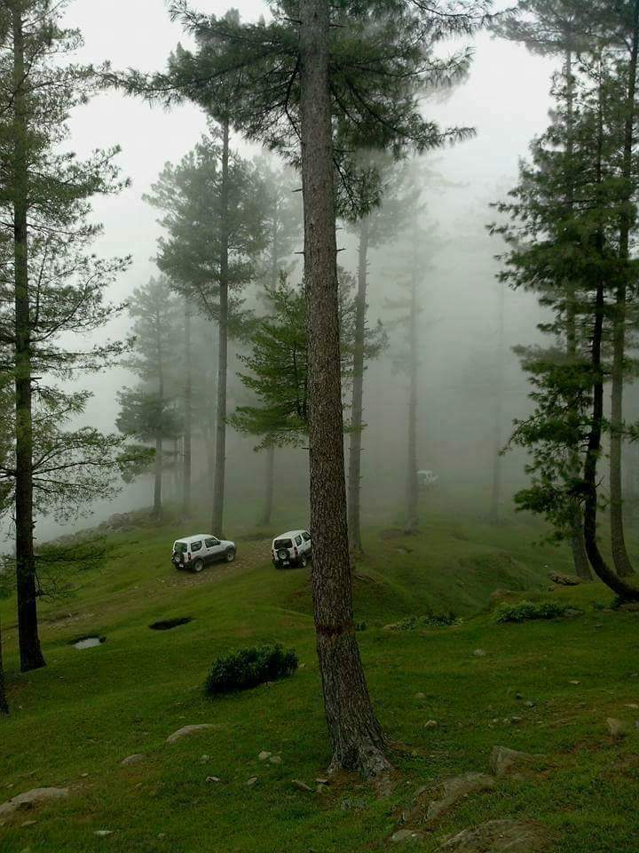
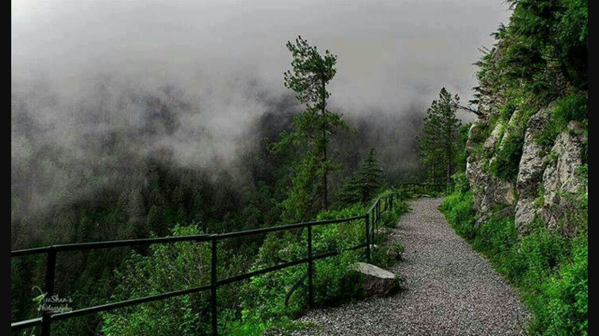

1. HARNOI LAKE

The Harnoi Lake in Abbottabad has been attracting many tourists from all over Pakistan, especially during the summer when the temperature rises to extreme levels.
My visit to Harnoi Lake was a mesmerizing experience. The serene waters, lush green surroundings, and peaceful ambiance left us in awe.
2. SHIMLA HILLS

Shimla Hill Abbottabad or (Shimla Pahari) is a most popular picnic spot among travel lovers, covered with a beautiful green pine forest.
Shimla Hills offered us panoramic views and a chance to connect with nature. We explored its enchanting beauty and enjoyed its tranquility.
3. NATHIAGALI

Nathia Gali is an attractive tourist destination located in Pakistan. It's known for its natural beauty, hikes, and refreshing climate.
Nathiagali's cool climate, dense forests, and scenic trails were a perfect escape. We trekked through the woods and embraced the natural beauty.
4. DUNGA GALI

Dunga Gali or Doonga Gali is one of the tourist mountain resort towns of the Galyat area of Ayubia National Park.
Dunga Gali offered us a peaceful retreat in the heart of Abbottabad. The colonial-era architecture and cool breeze were delightful.